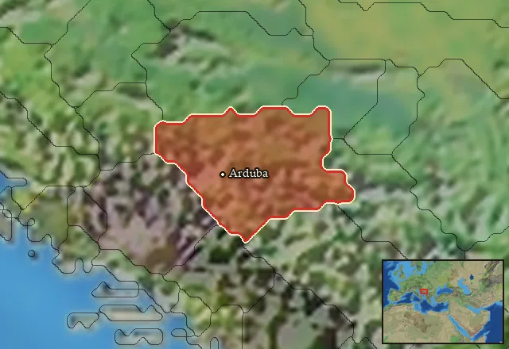

RTR: Imperium Surrectum
RTR: Imperium SurrectumDaesitiates Footmen
{kind=link}
Class: light · Category: infantry · Men per unit: 40
Stats
| Rank in roster | Rank in roster | Rank in roster | Rank in roster | ||||||||
|---|---|---|---|---|---|---|---|---|---|---|---|
| Men per unit | 40 | ███······· 28% | Attack | 14 | ███████··· 72% | Charge bonus | 16 | ███████··· 68% | Defence | 35 | ██████···· 59% |
| · armour | 3 | ██········ 22% | · defence skill | 29 | █████████· 91% | · shield | 3 | ████······ 38% | Morale | 12 | ██████···· 58% |
| Discipline | normal | Training | untrained | Recruitment cost | 1,812 dn | ████······ 38% | Upkeep per turn | 663 dn | ██████···· 57% | ||
| Turns to recruit | 3 |
Weapons
| Primary | Secondary | Primary | Secondary | Primary | Secondary | Primary | Secondary | ||||
|---|---|---|---|---|---|---|---|---|---|---|---|
| Attack | 14 | 9 | Charge bonus | 16 | 17 | Type | thrown · blade | melee · blade | Damage | piercing | slashing |
| Projectile | javelin | — | Range | 50 | — | Ammunition | 2 | — | Attributes | prec | ap |
| Min delay between blows | 25 | 25 |
Defence
| Primary | Secondary | Primary | Secondary | Primary | Secondary | Primary | Secondary | ||||
|---|---|---|---|---|---|---|---|---|---|---|---|
| Total | 35 | — | Armour | 3 | — | Defence skill | 29 | — | Shield | 3 | — |
| Material | flesh | — |
Condition, terrain and upkeep
| Hit points | 1 · mount 6 | Ground: scrub / sand / forest / snow | 0 / 0 / 0 / 0 | Heat penalty | 0 | Charge distance | 30 |
| Fire delay | 0 | Food consumed (low / high) | 60 / 300 | Mass per man | 0.88 | Formation: close / loose | 1 x 1.2 / 2 x 2.4 · 5 ranks · square |
| Men per unit | 40 as the unit file states — the game multiplies this by your unit size |
In battle: Can hide in long grass · Can sap · Very good stamina
The full attribute list (5)
sea_faring, hide_forest, hide_long_grass, can_sap, very_hardy
Who can recruit it
A core roster unit for one faction, which can raise it anywhere it holds the right building:
Any faction holding one of the provinces below can field it.
Exactly what a settlement must have, route by route (5)
| Building | Also requires | Building | Also requires | Building | Also requires | Building | Also requires |
|---|---|---|---|---|---|---|---|
| Region Information Scroll | Tier 2 Military Industrial Complex · Daesitiate area of recruitment · Any Government | Tier 2 Colony not built | Indirect Rule | Tier 2 Military Industrial Complex · Tier 1 Colony | Direct Rule | Tier 2 Military Industrial Complex · Tier 1 Colony | Homeland | Tier 2 Military Industrial Complex |
| Region Information Scroll | Tier 2 Military Industrial Complex · Daesitiate area of recruitment · Dependency or Indirect Rule | Tier 1 Colony not built |
Areas of recruitment

| Zone | Provinces | ||||||
|---|---|---|---|---|---|---|---|
| Daesitiate | 1 |
Description
Daesitiates Footmen stand ready to do whatever it takes to taste victory. They can skirmish with their javelins, or fight up close with their Pecine knives. Their armour or lack thereof is typical for the Illyrians, who generally prefer to keep their body covered only with a tunic. Instead, these men opt to trust in their agility, bronze helmets, and round wooden shields to evade enemy blows. These Footmen will fight equally well in loose formation, or as medium infantry in the main battle line.
Historical background
The Daesitiates were an Illyro-Pannonian people, centred mostly in what is now modern Bosnia and Slovenia. They were quite far removed from the sea, the Greeks, and the Romans. This means that records about them are quite sparse, as they had little contact with ‘civilised’ peoples until the first century BC. They were mentioned in passing in a description of Pannonia and Illyria by the first Roman geographer, Pomponius Mela (2.55-56): “The Parthenes and Dassaretae come first, follow the Taulanti, Enchelei, Phaeaci. From there are these (who are) properly called Illyrians”. Strabo (7.5.2 C 314) also asserts them to be a Pannonian people: “Breuci, Andizetii, Ditiones, Peirustæ, Mazæi, Daisitiatæ, whose chief was Baton, and other small obscure communities, which extend to Dalmatia”. There is some confusion between the Daesitiates and another group called the Daisioi, but it seems that most modern academics have settled on the idea that the word Daisioi is just a corrupted form of Daesitiates. This means that both names point at the same people who lived in the same area (Sasel Kos, Appian and Illyricum (2005), p. 408).
The Daesitiates were once a lesser people part of a greater coalition of Illyrians under the Autariatai. During the Middle La Tene period, the confederation collapsed, and the Daesitiates reclaimed their territory and independence (Sasel Kos, The 'great lake' and the Autariatai in Pseudo-Skylax (2013), p. 254). Their land ranged from the upper courses of the Rivers Bosna and Vrbas, along with their tributaries, and their outer frontiers were as far as removed as the Drina (Sasel Kos (2005), p. 415). Although this Pannonian branch of Illyrians is often seen as a distinct cultural group, they still had much in common with the Delmetae, including personal names (Sasel Kos (2005), p. 378). This means that they represent a hybrid of Pannonian and Illyric cultures, otherwise maintaining few external connections with other peoples (Wilkes, The Illyrians (1996), p. 80).
The Daesitiates built and manned a series of hillforts, generally in river valleys, in order to preserve natural communication routes and control arable land (Dzino, The Daesitiates: The identity-construct between contemporary and ancient perceptions (2009), p. 90). They did not seem to have a particularly distinctive or homogenous material culture of their own but benefited from access to (but not necessarily exploited) timber resources, as well as mineral deposits of gold, silver, and iron (Wilkes (1996), p. 203). Their time as part of a greater confederation may have helped with their own development, too, as it seems that the Daesitiates were socially advanced enough to create a war council, maintain close co-ordination with their allies, and unite their people for war (Sasel Kos (2005), p. 384). Edin Huseinovic further complements this image, claiming that the Daesitiates were organised enough to have their own prefects as representatives early on during the Romanisation of their province in the first and second centuries AD (Huseinovic, The Valley of the Una river, the Land of the “Illyrian” Iapodes (2022), p. 170). Ironically enough, it is possible that this rapid social development and subsequent creation of political alliances was a direct response to Roman imperialism during the late 2nd and 1st centuries BC (Dzino (2009), p. 91). By the time of the Illyrian War (229-228 BC), they may have been one of the strongest peoples in the Illyrian interior (Sasel Kos, Octavian’s Illyrian War Ambition and Strategy (2018), p. 46). This would explain their fearsome reputation in the later Great Illyrian Revolt, although that is a story for the Daesitiates Cavalry description!
As mentioned previously, the Daesitiates have not left behind any particularly noteworthy cultural artefacts, so their equipment is a blend of different Illyrian styles. They have the typical array of javelins, small round shields made from leather or wood with bronze bosses, and fairly long 30cm Pecine knives, as these are all commonly found Illyrian grave goods (Wilkes (1996), p. 239). They use a variety of Montefortino and Negau helmets – solid bronzeware that can protect the head and cheeks while providing unimpeded vision of the battle. These are Celtic items that found use all over Illyrian areas that were influenced by the La Tene culture and are typical of the middle La Tene period from between the 4th and 3rd centuries BC (Kuzman, Celtic helmets from Hellenistic necropolises at Ohrid (2014), p. 100). Therefore, these Footmen represent a synthesis of what was available to the Illyrians, Pannonians, and Celts altogether.